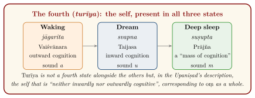
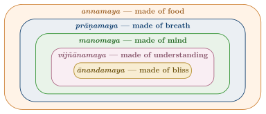

Chapter 2: The Dimensions of Consciousness¶
prajñānaṃ brahma
Brahman is consciousness.
— Aitareya Upaniṣad 3.3
2.1 The Upaniṣadic Turn Inward¶
The oldest Upaniṣads, composed in the middle centuries of the first millennium BCE, shift the focus of Vedic speculation from the ritual and the cosmos to the person who performs the ritual and knows the cosmos. Their central question is “what is the self (ātman)?”, and their central claim, stated in many forms, is that the self in its true nature is identical with Brahman, the ground of all that exists. In pursuing this question the Upaniṣadic teachers produced the earliest sustained analyses of consciousness in Indian literature: of the difference between the knower and the known, of the states of waking, dream and sleep, and of the layers that make up a person.
These texts are not treatises. They are collections of dialogues, teachings and ritual speculations, composed and transmitted by different Vedic schools over several centuries, and they do not present a single system (Olivelle 1998). Later commentators — above all Śaṅkara and the Vedāntins who followed him — read them as a unified doctrine, and much of the modern literature reads them through Advaita eyes. This chapter tries to present first what the texts say, and then how later schools developed them.
2.2 Four “Great Sayings”¶
Later Vedānta singled out four sentences, one from an Upaniṣad of each Veda, as “great sayings” (mahāvākya) that express the identity of self and Brahman (Table 2.1).
| Saying | Meaning | Source |
|---|---|---|
| prajñānaṃ brahma | Brahman is consciousness | Aitareya Up. 3.3 (Ṛgveda) |
| ahaṃ brahmāsmi | I am Brahman | Bṛhadāraṇyaka Up. 1.4.10 (Yajurveda) |
| tat tvam asi | You are that | Chāndogya Up. 6.8.7 (Sāmaveda) |
| ayam ātmā brahma | This self is Brahman | Māṇḍūkya Up. 2 (Atharvaveda) |
The grouping is late — it is not found in the Upaniṣads themselves — and in their original contexts the sentences do different work. “You are that” is the refrain of Uddālaka Āruṇi’s instruction to his son Śvetaketu in Chāndogya Upaniṣad 6, where “that” refers to the subtle essence (aṇiman) underlying all things:
Chāndogya Upaniṣad 6.8.7
sa ya eṣo ’ṇimaitadātmyam idaṃ sarvaṃ tat satyaṃ sa ātmā tat tvam asi śvetaketo
That which is this finest essence — the whole world has it as its self. That is the truth; that is the self. You are that, Śvetaketu.
How can a sentence identify the limited individual (“you”) with the unlimited ground of the world (“that”)? Later Advaitins answered with a theory of interpretation. In an ordinary sentence such as “this is that Devadatta”, said of a man seen now and once before in another place, we set aside the incompatible features of the two occasions (here and there, now and then) and retain the person who is common to both. In the same way, they argued, tat tvam asi sets aside the limiting features of the individual (finitude, embodiment) and of the cosmic lord (omniscience, rulership over the world) and points to the pure consciousness common to both. This “partial” secondary meaning (jahadajahallakṣaṇā) became a standard part of Advaita exegesis and shows how closely the doctrine of consciousness was tied to a theory of language.
Uddālaka’s method is pedagogically striking: he teaches through demonstrations — salt dissolved in water that can be tasted but not seen, the seed of a banyan split open to reveal nothing visible, a blindfolded man finding his way home — each followed by the same refrain. The teaching proceeds by repeated concrete examples rather than by definition, a method to which Chapter 9 returns.
2.3 Light, the Seer and the Seen¶
In the Bṛhadāraṇyaka Upaniṣad (4.3), King Janaka asks Yājñavalkya what light a person has. The sun, Yājñavalkya answers; when the sun has set, the moon; then fire; then speech; and when all these have ceased, “the self is his light” (ātmaivāsya jyotir bhavati). The self is the light by which everything else is seen and which is not itself an object of seeing. In another passage Yājñavalkya argues that “you cannot see the seer of seeing, you cannot hear the hearer of hearing” (BU 3.4.2): the subject of experience cannot become its own object.
These arguments became the foundation of the Vedāntic doctrine of the self as the witness (sākṣin) and as self-luminous (svaprakāśa), discussed in Chapter 4. They also set a problem that occupied Indian philosophers for two thousand years: if the self is never an object, how is it known at all? The Buddhists answered that there is no such self to know; the Nyāya philosophers that the self is known by inference and by inner perception of its qualities; the Advaitins that it is known not as an object but as the very fact of awareness.
2.4 The Chariot of the Self: The Kaṭha Upaniṣad¶
The Kaṭha Upaniṣad, one of the most widely read of the verse Upaniṣads, frames its teaching as a dialogue between the boy Naciketas and Yama, the lord of death. In its third section it offers the most influential image of the person in Indian literature:
Kaṭha Upaniṣad 1.3.3–4
ātmānaṃ rathinaṃ viddhi śarīraṃ ratham eva tu |
buddhiṃ tu sārathiṃ viddhi manaḥ pragraham eva ca ||
indriyāṇi hayān āhur viṣayāṃs teṣu gocarān |
ātmendriyamanoyuktaṃ bhoktety āhur manīṣiṇaḥ ||
Know the self as the rider in the chariot, and the body as the chariot. Know the intellect as the charioteer and the mind as the reins. The senses, they say, are the horses, and the objects of sense the paths they range over. The self joined with body, senses and mind the wise call “the enjoyer”.
The verses that follow draw out the image: one who lacks understanding and whose mind is never controlled has senses like the vicious horses of a bad charioteer; one who has understanding and a controlled mind has senses like the good horses of a skilled driver, and reaches the end of the road, “the highest step of Viṣṇu”. The Upaniṣad then sets out a hierarchy:
Kaṭha Upaniṣad 1.3.10–11
indriyebhyaḥ parā hy arthā arthebhyaś ca paraṃ manaḥ |
manasas tu parā buddhir buddher ātmā mahān paraḥ ||
mahataḥ param avyaktam avyaktāt puruṣaḥ paraḥ |
puruṣān na paraṃ kiṃcit sā kāṣṭhā sā parā gatiḥ ||
Higher than the senses are their objects; higher than the objects is the mind; higher than the mind is the intellect; higher than the intellect is the great self. Higher than the great is the unmanifest; higher than the unmanifest is the person. There is nothing higher than the person: that is the goal, that the highest way.
This sequence — senses, mind, intellect, the “great” (mahat), the unmanifest (avyakta), the person (puruṣa) — shares its vocabulary with the later system of Sāṃkhya (Chapter 3), and scholars have long seen in it an early stage of that system’s development. The chariot image, with its picture of the intellect controlling the mind as a driver controls horses through the reins, became a commonplace of later Indian ethics and psychology. It has a striking parallel in Plato’s Phaedrus, where the soul is likened to a charioteer driving two horses. No contact between the two texts is documented, and the resemblance is best treated as a parallel, not as evidence of borrowing in either direction.
2.5 The Four States: The Māṇḍūkya Upaniṣad¶
The Māṇḍūkya Upaniṣad, a text of only twelve short prose sections, analyses the syllable oṃ and the states of the self in parallel. Its date is uncertain but it is later than the oldest Upaniṣads.
Māṇḍūkya Upaniṣad 1
om ity etad akṣaram idaṃ sarvaṃ tasyopavyākhyānaṃ bhūtaṃ bhavad bhaviṣyad iti sarvam oṃkāra eva | yac cānyat trikālātītaṃ tad apy oṃkāra eva ||
Oṃ — this syllable is all this. Its explanation: the past, the present and the future — all this is oṃ. And whatever else lies beyond the three times, that too is oṃ.
The text then distinguishes four “quarters” (pāda) of the self.
-
Waking (jāgarita). The self as Vaiśvānara, “common to all men”, whose cognition is turned outward (bahiṣprajña) and who enjoys gross objects.
-
Dream (svapna). The self as Taijasa, “the luminous”, whose cognition is turned inward (antaḥprajña) and who enjoys subtle objects.
-
Deep sleep (suṣupta). The self as Prājña, “the knowing”, in whom cognition has become a single mass (prajñānaghana), “made of bliss and enjoying bliss”.
-
The fourth (caturtha, later turīya). Not a further state alongside the others but the self as such.
The description of deep sleep is precise:
Māṇḍūkya Upaniṣad 5
yatra supto na kañcana kāmaṃ kāmayate na kañcana svapnaṃ paśyati tat suṣuptam
When one asleep desires no desire and sees no dream, that is deep sleep.
The fourth is described almost entirely by negation:
Māṇḍūkya Upaniṣad 7
nāntaḥprajñaṃ na bahiṣprajñaṃ nobhayataḥprajñaṃ na prajñānaghanaṃ na prajñaṃ nāprajñam | adṛṣṭam avyavahāryam agrāhyam alakṣaṇam acintyam avyapadeśyam ekātmapratyayasāraṃ prapañcopaśamaṃ śāntaṃ śivam advaitaṃ caturthaṃ manyante sa ātmā sa vijñeyaḥ ||
Not inwardly cognitive, not outwardly cognitive, not cognitive both ways, not a mass of cognition, neither cognitive nor non-cognitive; unseen, beyond transaction, ungraspable, without marks, unthinkable, indescribable, whose essence is the cognition of the one self, the cessation of the world, peaceful, auspicious, non-dual — this they consider the fourth. That is the self; that is what is to be known.
The final sections map the three states onto the three sounds of oṃ (a, u, m) and the fourth onto the soundless syllable as a whole:
Māṇḍūkya Upaniṣad 12
amātraś caturtho ’vyavahāryaḥ prapañcopaśamaḥ śivo ’dvaita evam oṃkāra ātmaiva saṃviśaty ātmanātmānaṃ ya evaṃ veda ||
The fourth is without measure, beyond transaction, the cessation of the world, auspicious, non-dual. Thus oṃ is the self. One who knows this enters the self by the self.

2.5.1 The Philosophical Point¶
The argument implicit in the Māṇḍūkya (Figure 2.1) — and made explicit by its commentators — is that the contents of experience change completely from waking to dream to dreamless sleep, while something remains constant: the one to whom these states belong. Since the self persists through all three, it cannot be identified with any of them. Deep sleep is particularly important: on waking we say “I slept happily, I knew nothing”, and the Vedāntins took this as evidence that awareness, and a kind of bliss, were present even in the absence of any object.
Other Upaniṣads describe sleep in physiological-sounding terms. The Praśna Upaniṣad (4.2–3) compares the senses in sleep to the rays of the setting sun, which gather into the sun’s disc: in sleep the senses become one in the mind, “the highest god”, so that a person “does not hear, does not see, does not smell”, while the vital breaths remain awake like fires keeping watch in a sleeping house. The Bṛhadāraṇyaka (2.1.19) and Chāndogya (8.6) Upaniṣads speak of the self in deep sleep as resting in the channels (nāḍī) of the heart. These images belong to a family of ideas about breath and the body that later developed into the medical and yogic theories of the channels.
Other schools rejected the Vedāntic reading of deep sleep. The Nyāya philosophers held that in dreamless sleep there is no cognition at all, since cognition arises only when the mind is in contact with the self and a sense organ; the memory of having “slept well” is an inference from the refreshed state of the body. The Buddhists explained deep sleep in terms of a subtle continuing stream of consciousness (Pali bhavaṅga) without positing a self. The question is still debated by philosophers working on sleep and consciousness (Thompson 2015).
2.5.2 The Three States and Sleep Science¶
Modern sleep research distinguishes waking, rapid-eye-movement (REM) sleep, in which vivid dreaming is most common, and non-REM sleep, whose deepest stage is associated with little reportable mental content. The correspondence with the Upaniṣadic triad is loose: dreaming also occurs in non-REM sleep, the modern stages are defined by physiological measurement rather than by the content of experience, and turīya has no counterpart in sleep science. The Upaniṣadic scheme is a phenomenological and metaphysical analysis, not an early version of polysomnography.
2.6 Gauḍapāda’s Kārikā¶
The Māṇḍūkyakārikā (also called Āgamaśāstra), attributed to Gauḍapāda, whom tradition makes the teacher of Śaṅkara’s teacher, is a verse treatise in four chapters of 29, 38, 48 and 100 verses. It is usually dated to the sixth century CE. Only the first chapter comments on the Māṇḍūkya; the others develop an independent argument, with clear debts to Buddhist Madhyamaka and Yogācāra thought (Potter 1981). Table 2.2 summarises the four chapters.
| Name | Verses | Theme | |
|---|---|---|---|
| I | Āgama | 29 | Exposition of the Māṇḍūkya; oṃ and the four states |
| II | Vaitathya | 38 | “Unreality”: waking objects are as unreal as dream objects |
| III | Advaita | 48 | Non-duality; critique of theories of causation |
| IV | Alātaśānti | 100 | “Quenching of the firebrand”; non-origination (ajātivāda) |
Gauḍapāda’s central doctrine is ajātivāda, “non-origination”: nothing real ever comes into being. His argument in the second chapter starts from dreams: the marks by which we judge waking objects real are present in dreams too, and so cannot prove the reality of the waking world (the argument is set out in Chapter 7). The conclusion is stated with deliberate starkness:
Māṇḍūkyakārikā 2.32
na nirodho na cotpattir na baddho na ca sādhakaḥ |
na mumukṣur na vai mukta ity eṣā paramārthatā ||
There is no dissolution, no origination; no one bound and no one striving; no seeker of liberation and no one liberated. This is the highest truth.
Gauḍapāda also recommends a contemplative practice he calls “touchless yoga” (asparśayoga, GK 3.39), which he admits is “difficult to see” and of which yogins are afraid, “seeing fear where there is no fear”. The term, and much of the vocabulary of the fourth chapter, closely resembles that of Mahāyāna Buddhism, and scholars have long debated how far Gauḍapāda borrowed from Buddhist sources. Later Advaitins were sensitive to the charge that their doctrine was “Buddhism in disguise”, a charge pressed by their Vedāntic opponents.
The image of the fourth chapter’s title is that of a burning torch whirled in the air: the circles and lines we see are produced by the movement of a single point of fire, and when the movement stops they vanish. So, Gauḍapāda argues, the world of multiplicity is a “vibration” (spandita) of consciousness.
2.7 The Five Sheaths: The Taittirīya Upaniṣad¶
The second chapter of the Taittirīya Upaniṣad (the Brahmānandavallī) describes the person as a series of selves, each “made of” (-maya) a different substance and each contained within the previous one: the self made of food (annamaya), of breath (prāṇamaya), of mind (manomaya), of understanding (vijñānamaya) and of bliss (ānandamaya). The Upaniṣad does not use the word “sheath” (kośa); that term comes from later Vedānta, which treated the five as coverings to be distinguished from the true self (Table 2.3 and Figure 2.2).
Taittirīya Upaniṣad 2.1
brahmavid āpnoti param | tad eṣābhyuktā | satyaṃ jñānam anantaṃ brahma
One who knows Brahman attains the highest. On this there is the verse: “Brahman is truth, knowledge, infinite.”
| Self (kośa) | Made of | Later Vedāntic interpretation |
|---|---|---|
| annamaya | Food | The physical body (gross body) |
| prāṇamaya | Breath, the five vital winds | Vital functions (part of the subtle body) |
| manomaya | Mind | Manas with the organs of perception |
| vijñānamaya | Understanding | Buddhi, the sense of agency |
| ānandamaya | Bliss | The causal body, experienced in deep sleep |

The third chapter of the same Upaniṣad (the Bhṛguvallī) presents the teaching as a process of discovery. Bhṛgu asks his father Varuṇa to teach him Brahman. Varuṇa gives him only a definition — “that from which these beings are born, by which, once born, they live, and into which they pass on dying: seek to know that; that is Brahman” (TU 3.1) — and sends him to practise austerity (tapas). Bhṛgu returns five times, having concluded successively that Brahman is food, breath, mind, understanding and finally bliss. The episode is often cited as an example of teaching by guided inquiry rather than by instruction.
The five sheaths are widely used today as a framework for “holistic” health or education, mapped onto physical, emotional, intellectual and spiritual development. That is a modern adaptation: the Upaniṣad’s purpose is to lead the student to Brahman, not to provide a model of human development.
2.8 The Three Bodies¶
Later Vedānta combined the five sheaths and the three states into the doctrine of three bodies (śarīratraya): the gross body (sthūla), corresponding to the food-sheath and the waking state; the subtle body (sūkṣma or liṅga), comprising the vital, mental and intellectual sheaths and associated with dreaming; and the causal body (kāraṇa), identified with the bliss-sheath and with deep sleep. The self, the witness of all three, is identified with turīya. The scheme is a scholastic systematisation of the Upaniṣadic material, found in manuals such as Sadānanda’s Vedāntasāra; it is not present as such in the Upaniṣads.
2.9 Consciousness and the Body in Āyurveda¶
The physicians had to explain consciousness in a way that fitted the living body they treated. The Carakasaṃhitā (Śārīrasthāna 1) describes the person (puruṣa) as a combination of the self, the mind and the elements, and argues that knowledge arises only when the self, the mind, a sense organ and its object are brought together; when the mind is not joined to a sense, no knowledge arises even if the object is present. The self is said to be the cause of consciousness, but it is conscious only when joined with the mind and the body; in itself it is without awareness. The analysis is close to that of the Nyāya–Vaiśeṣika school (Chapter 3). Caraka also discusses why the self, though in principle all-pervading, experiences pleasure and pain only in one body, and how the mind’s contact with impurities produces suffering.
This medical account is important because it shows the Upaniṣadic and philosophical vocabulary of self and mind put to practical use. For the physician, consciousness was not an abstract absolute but something whose presence, absence and disturbance in a particular patient had to be assessed — in fainting, in delirium, in insanity, in the approach of death.
2.10 The Five Vital Breaths¶
From the Upaniṣads onwards Indian texts distinguish five “breaths” or vital winds (prāṇa) with different functions in the body. Their names are stable, though their functions are described somewhat differently in different texts: prāṇa, the breath of the chest and head, associated with inhalation; apāna, the downward breath, associated with excretion and reproduction; vyāna, the diffused breath that pervades the body; udāna, the upward breath, associated with speech and, in some Upaniṣads, with the departure of the self at death; and samāna, the “equalising” breath in the middle of the body, associated with digestion. The medical texts and the yogic literature developed this scheme further. It is a physiological theory of its time; the psychological meanings assigned to each breath in some modern yoga manuals go beyond the sources.
2.11 Breath and Mind¶
From the Upaniṣads onwards, Indian texts link the mind (manas) closely with the breath (prāṇa). Several Upaniṣadic passages describe a contest among the bodily powers — speech, sight, hearing, mind and breath — in which breath proves indispensable (e.g. BU 6.1, ChU 5.1). The later Haṭha Yoga texts make the connection the basis of their practice:
Haṭhayogapradīpikā 2.2
cale vāte calaṃ cittaṃ niścale niścalaṃ bhavet |
yogī sthāṇutvam āpnoti tato vāyuṃ nirodhayet ||
When the breath moves, the mind moves; when the breath is still, the mind becomes still. The yogin attains steadiness; therefore he should restrain the breath.
The Haṭhayogapradīpikā is a fifteenth-century text, and its claims concern the yogin’s progress towards absorption. Modern physiology has found that breathing does interact with brain activity — for example, nasal breathing has been reported to modulate oscillations in limbic brain regions and to affect performance on memory tasks (Zelano et al. 2016) — and slow breathing is studied for its effects on the autonomic nervous system. Such findings make the traditional association of breath and mind intelligible without validating the specific claims of Haṭha Yoga (Section 1.10).
2.12 Consciousness in Kashmir Śaivism¶
The non-dual Śaiva philosophers of Kashmir — Somānanda (early 10th century), his pupil Utpaladeva (c. 925–975), Abhinavagupta (c. 950–1016) and Abhinavagupta’s pupil Kṣemarāja — developed a theory of consciousness that is consciously opposed to the Vedāntic picture of a passive witness. Consciousness (cit, saṃvit), for them, is not only luminous (prakāśa) but also reflexively aware of itself (vimarśa); it is intrinsically active, free and creative. The world is its self-manifestation, not an illusion superimposed on it.
2.12.1 The Thirty-Six Principles¶
The Śaiva systems extend the twenty-five principles (tattva) of Sāṃkhya (Chapter 3) to thirty-six by adding eleven above them: five “pure” principles — Śiva, Śakti, Sadāśiva, Īśvara and Śuddhavidyā — in which consciousness experiences itself as “I” with progressively more articulated awareness of “this”; then Māyā, the power of limitation; and five “sheaths” (kañcuka) through which Māyā restricts the universal consciousness to a finite subject: limitation of agency (kalā), of knowledge (vidyā), of satisfaction (rāga), of time (kāla), and restriction by causal order and place (niyati). The five kañcukas are, in effect, an analysis of what it is to be a finite knower and agent.
2.12.2 Vibration¶
A related strand of Kashmir Śaivism, the doctrine of “vibration” (spanda), goes back to the Spandakārikā, a short verse text attributed to Vasugupta or his pupil Bhaṭṭa Kallaṭa (9th century). It describes consciousness as a subtle, pulsating movement that is the source of all activity, perception and emotion. The practitioner is taught to notice the moments in which this vibration becomes palpable — at the start of an intense emotion such as anger or joy, at the moment of a sudden surprise, at the junction between waking and sleep — and to recognise in them the activity of universal consciousness. The doctrine is thus also a contemplative technique for working with emotion: strong feelings are not suppressed but used as gateways (Dyczkowski 1987).
2.12.3 Recognition¶
The school takes its name from Utpaladeva’s Īśvarapratyabhijñākārikā, “Verses on the Recognition of the Lord”. Liberation is not the acquisition of anything new but the recognition (pratyabhijñā) that one’s own consciousness is already the universal consciousness. Kṣemarāja’s short manual, the Pratyabhijñāhṛdaya, opens with a sūtra that summarises the doctrine:
Kṣemarāja, Pratyabhijñāhṛdaya, sūtra 1
citiḥ svatantrā viśvasiddhihetuḥ
Consciousness, free, is the cause of the accomplishment of the universe.
The Śaiva texts also describe consciousness as performing five acts (pañcakṛtya): emission, maintenance and withdrawal of the world, concealment of its own nature, and grace (self-revelation). And some Śaiva and Śākta authors speak of a state “beyond the fourth” (turyātīta), in which the awareness glimpsed in turīya pervades all three ordinary states. Abhinavagupta’s aesthetics, discussed in Chapter 6, is built on this philosophy of consciousness (Dyczkowski 1987). His vast Tantrāloka (“Light on the Tantras”) sets out the whole Śaiva system of ritual and contemplative practice, arranged according to the means (upāya) suited to students of different capacities — from the “non-means” of sudden recognition for the most gifted, through means centred on will and on knowledge, to ritual and bodily means for those who need them. The graded scheme is another example of the Indian principle that teaching must be matched to the student.
2.13 Consciousness and Language: Bhartṛhari¶
The grammarian-philosopher Bhartṛhari (c. 5th century CE), in his Vākyapadīya, argued that all cognition is interpenetrated by language: “there is no cognition in the world that does not follow language” (Vākyapadīya 1.131 in Rau’s edition, 1.123 in Iyer’s: na so ’sti pratyayo loke yaḥ śabdānugamād ṛte). Meaning, on his account, is grasped as a whole — the sphoṭa, the unitary linguistic entity manifested by the sequence of sounds — rather than being assembled piece by piece from sounds or words (Iyer 1969).
Bhartṛhari distinguished three levels of speech: articulated speech (vaikharī), the intermediate level of speech in the mind (madhyamā), and the “seeing” level (paśyantī) at which meaning exists as an undivided whole. The Kashmir Śaivas later added a fourth and highest level, “supreme speech” (parā vāk), identified with consciousness itself; this fourth level is not found in Bhartṛhari. The theory’s holism about meaning has interested modern philosophers of language; it is a philosophical theory about language and cognition, not an account of language processing.
2.14 Consciousness in Jain Thought¶
For the Jains, consciousness is the defining mark of the soul (jīva), and every soul is in its pure state omniscient. Jain philosophers distinguish two aspects of conscious activity (upayoga): “seeing” (darśana), an undifferentiated, general awareness of an object, and “knowing” (jñāna), a differentiated cognition of its particular features. In ordinary beings “seeing” precedes “knowing”; in the omniscient they occur together, or — the point was debated between the Śvetāmbara and Digambara traditions — in alternate moments. The distinction resembles the Nyāya and Buddhist distinction between indeterminate and determinate perception (Chapter 3), but is framed in terms of the soul’s own activity rather than of the relation between the senses and their objects.
Jain thinkers also graded living beings by the number of their senses, from one-sensed beings such as plants and earth-bodies, which have only touch, to five-sensed beings, some of which possess a mind (saṃjñin) capable of reflection. Consciousness, on this view, is present in all living beings, but in very different degrees of development — a hierarchy that underlay the Jain ethic of non-violence towards all life (Jaini 1979).
2.15 Is Consciousness Self-Revealing?¶
A question debated across all the schools was whether a cognition makes itself known, or whether it needs to be known by something else. When I see a pot, do I also, in the same act, know that I am seeing it? The answers divided the schools along lines that cut across the division between “orthodox” and “heterodox” (Matilal 1986).
-
Nyāya held that a cognition is not self-aware. The first cognition (“this is a pot”) is known, if at all, by a second, introspective cognition (anuvyavasāya: “I am aware of the pot”), produced through the mind as an inner sense. Cognitions can therefore occur without being known.
-
The Buddhist epistemologists Dignāga and Dharmakīrti held that every cognition is aware of itself (svasaṃvedana): it has an aspect that presents the object and an aspect that presents the cognition. One of their arguments is from memory: we can later remember not only the object but our having seen it, which would be impossible if the experience had not been registered at the time.
-
Mīmāṃsā was divided. Kumārila held that a cognition is not perceived but inferred from the “cognisedness” (jñātatā) it produces in its object; Prabhākara held that every cognition reveals at once the knower, the known and the knowing (the “triple perception”, tripuṭī).
-
Advaita Vedānta held that consciousness itself is self-luminous (svaprakāśa) and never an object, while particular mental states are revealed by it (Chapter 4).
The debate is one of the most sophisticated in Indian philosophy, and it bears on issues still discussed in philosophy of mind: whether consciousness essentially involves self-awareness, whether there can be unconscious mental states, and how introspection works. Philosophers working on “pre-reflective self-awareness” have engaged with the Indian arguments as live philosophical positions, notably in the collaborative volume edited by Mark Siderits, Evan Thompson and Dan Zahavi (Siderits et al. 2011) and in Jonardon Ganeri’s study of the self (Ganeri 2012).
2.16 Knowing Other Minds¶
How do we know that others are conscious? The Nyāya philosophers answered that we infer other minds from the purposive behaviour of other bodies, by analogy with our own case. The Buddhist logician Dharmakīrti (7th century) devoted a short treatise, the Santānāntarasiddhi (“Proof of Other Streams”), to the question, arguing that even an idealist must accept other mental streams on the basis of inference from their effects. Advaita Vedānta, for which there is ultimately only one consciousness, treats the plurality of minds as a feature of the empirical level of reality. The Jains, for whom each soul is a distinct centre of consciousness, list direct knowledge of others’ thoughts (manaḥparyāya jñāna) among the supernormal forms of knowledge available to advanced ascetics. The range of positions shows that Indian philosophers recognised the problem and treated it with the same seriousness as other questions of epistemology.
2.17 Assessment¶
The Upaniṣads and their successors offer a sustained reflection on consciousness that is unusual among ancient literatures for its attention to dream and dreamless sleep, for its arguments about the subject that cannot be made an object, and for its development into rival philosophical systems. Its claims are metaphysical claims, argued by their authors on the basis of scripture, reasoning and contemplative experience. Modern consciousness studies can engage with them as philosophical positions — the idea that consciousness is fundamental, for example, has modern defenders as well as critics — but no neuroscientific finding has shown them to be true or false, and presenting them as anticipations of modern science misrepresents both.
What the Indian traditions can offer contemporary discussion is something different: a long record of careful description of states of consciousness by people who trained their attention intensively, a range of rival theories argued with great sophistication, and a set of questions — about the self that persists through sleep, about whether awareness is reflexive, about the relation between consciousness and its objects — that remain open. Read in that way, the material in this chapter belongs not to the prehistory of neuroscience but to the history of philosophy, where it stands comparison with any tradition.
Further Reading¶
-
Olivelle (1998): text and translation of the early Upaniṣads, with a valuable introduction; Radhakrishnan (1953) for a wider selection with an Advaita-leaning commentary.
-
Potter (1981): summaries of Gauḍapāda’s and Śaṅkara’s works, with a historical introduction.
-
Dyczkowski (1987): the Kashmir Śaiva doctrine of vibration and its theory of consciousness; Singh (1963) for a translation of the Pratyabhijñāhṛdaya.
-
Iyer (1969): Bhartṛhari’s philosophy of language.
-
Thompson (2015): a dialogue between Indian theories of waking, dreaming and sleep and contemporary cognitive science.